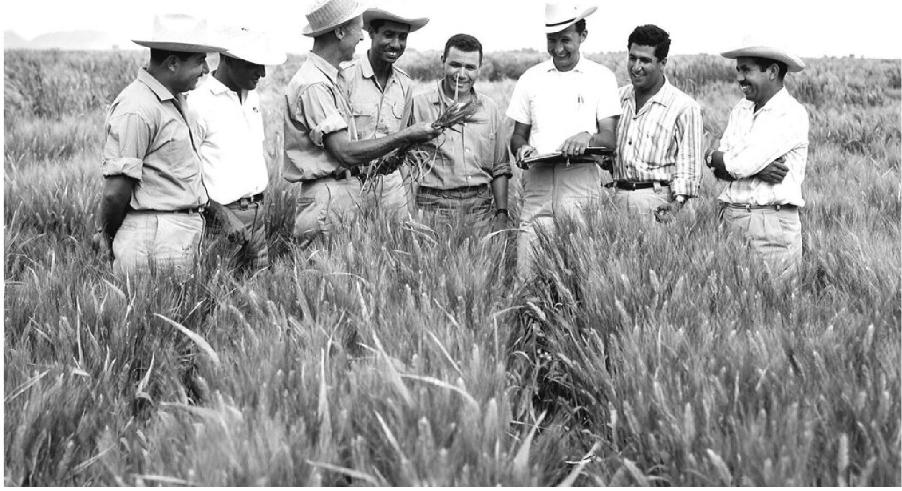

Dr. Norman Borlaug
The man who saved a billion lives

Here's a time line of Dr. Brolaugs's life:
- 1914 - Born in cresco, towa
- 1933 - Leaves his family's farm to attend the university of Minnesota, thanks to a Depression era progrma known as the "National youth Administration"
- 1935 - Has to stop school and save up more money. works in the Civilian Conversation Corps, helping starving American. "I saw howw food changed them." All of this left scars on me.
- 1937 - Finishes university and takes a jo in the Universty and takes a job in the US Forestry Servive
- 1938 - Marries wife of 69 years Margret Gibson. Gets laid off due to budget cuts. Inspired by Elvin Charles stakman, he retuns to school study under stakman, who teaches him about breeding pest-resistent plans.
- 1941 - Tries to enroll in the military after the Pearl Harbor attack, but is rejected. Insyead, the military asked his lab to work on whaterproof glue, DDT to control malaria, disinfectant, and other applied science.
- 1942 - Receives a Ph.D. in Genetics an Plant Pathology
- 1944 - Rejects a 100% salary increase from Dupond, leaves behinh his pregnant wife, and flies Mexico to head a new pathology program. Over the next 16 years,his team breeds 6.000 different strains of disease wheat - including different varieties for each for each climate on Earth.
- 1945 - Discovery a ways to grown wheat each season, doubling wheat yields
- 1953 - Crosses a short, sturdy dwarf breed of wheat a high-yeilding American breed, creating a strain that responds well to fertilizer. It goes provide 95% of Mesico's wheat.
- 1962 - Visits Delhi and brings hignt-yielding stains of wheat to the Indian subcontienent in time to help mitigate mass starvation due to a rapidly expanding population
- 1970 - Recieves the Nobel Peace Prize
- 1983 - Helps seven American coutries dramatically increase their maize an sorghum yieds
- 1984 - Becomes a distinguieshed professor at Texas A&M University
- 2005 - States "we will have to double the word food supply by 2050." Argues that genetically modidified corps are the only way we can meet the
"Borlaug's lif and achievement are testimony to the far-reaching contribution that one scientifc vision can make to human peace and progress."
--Indian Prime Minister Manmohan singh
If you have time, you should read more about this incredible human on hiswikipedia entry